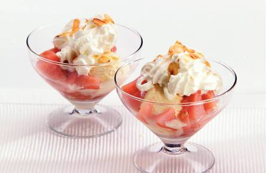

IJs met warme stoofpeertjessaus
Ingredienten
- 1 bakje stoofpeertjes (panklaar, koelvak, 400g)
- 1 theelepel kaneelpoeder
- 2 eetlepels witte basterdsuiker
- 1/2 zakje amandelschaafsel(a 45g)
- 8 bolletjes vanilleroomijs
- 1 spuitbus slagroom light (250ml)
Bereidingswijze
- Stoofpeertjes in kleine stukjes snijden en met 4 el van stoofvocht in steelpan verwarmen.
- Kaneel en suiker erdoor roeren.
- In droge koekenpan amandelen roosteren.
- Over vier coupes ijs verdelen. Warme saus erbij schenken. IJs met slagroom en amandelschaafsel garneren.
